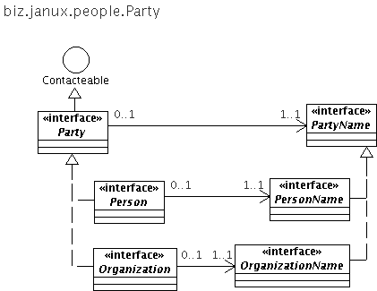
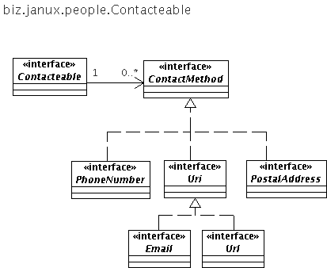

The biz.janux.people package represents {@link biz.janux.people.Person Persons} and {@link biz.janux.people.Organization Organizations} using the key concept of a {@link biz.janux.people.Party Party}, which makes it possible to treat Person and Organizations interchangeably in the context of a contract, a business relationship or other relationships that may be entered between people and organization.
{@link biz.janux.people.Person} and {@link biz.janux.people.Organization} both extend from {@link biz.janux.people.Party}. The party interface is quite simple, it is limited to having a name and a map of {@link biz.janux.people.ContactMethod ContactMethods}, as illustrated below: 
In addition, a Party extends {@link biz.janux.people.Contacteable} and thus has a map of {@link biz.janux.people.ContactMethod ContactMethods}: 